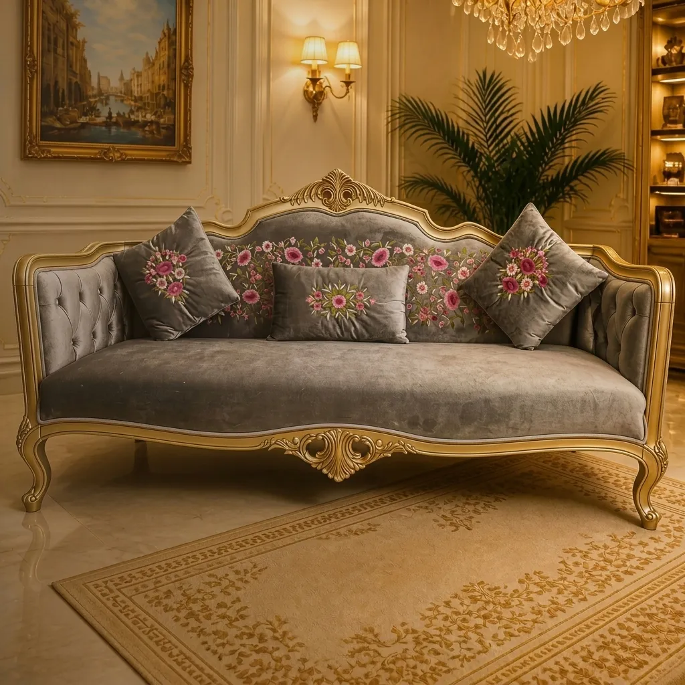

HE
VEN
FURNITURE MART
BESPOKE FURNITURE & INTERIOR STYLING · CHATTOGRAM
Furniture,
Crafted
Around You.

DRAWN TO MEASURE
One piece, drawn for you.
HEAVEN FURNITURE MART · AGRABAD ACCESS ROAD, CHATTOGRAM